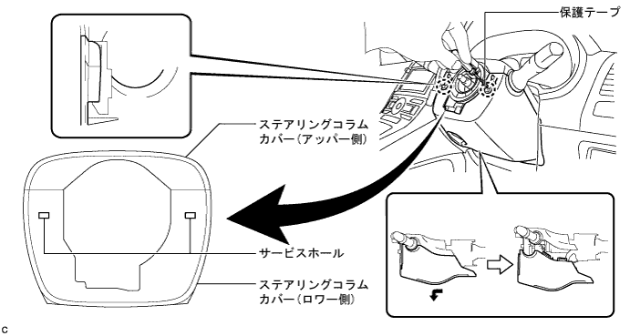
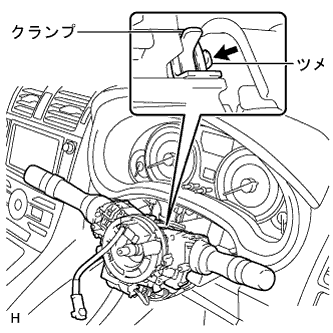

Steering Column Assembly Removal |
)| 1. Check Front Wheels Straight-ahead Position |
| 2. Remove Horn Button Assembly |
for reference.| 3. Remove Instrument Panel Airbag Assembly LWR NO.1 |
for reference.| 4. Remove Steering Wheel Assembly |
Operate the tilt and telescopic mechanisms to fix the steering column assembly in its fully extended and fully raised position.
 |
Remove the nut and put matchmarks on the steering wheel assembly and steering column assembly.
 |
Using SST, remove the steering wheel assembly.
| 5. Remove Steering Column Cover |
Release the tilt lever.
 |
Push the steering column cover (lower side) from the left and right to disengage the 4 claws.
 |
Insert a finger through the tilt lever opening of the steering column cover (lower side) and disengage the claw.
As shown in the illustration, insert a flat-tipped screwdriver wrapped with protective tape into the 2 service holes of the steering column cover (lower side), disengage the 2 claws and remove the steering column cover (lower side).

 |
Disengage the 2 claws and pins, and remove the steering column cover (upper side).
| 6. Remove Turn Signal Switch Assembly w/ Spiral Cable |
Disconnect each connector from the turn signal switch assembly w/ spiral cable.
 |
Using pliers, loosen the clamp.
With the clamp loosened, disengage the claws using a flat-tipped screwdriver, and remove the turn signal switch assembly w/ spiral cable from the steering column assembly.
| 7. Remove Instrument Panel UPR w/ Instrument Panel Passenger Airbag Assembly |
for reference.| 8. Remove Column Hole Cover Silencer Sheet |
 |
Turn back the floor carpet, remove the 2 clips, and remove the column hole cover silencer sheet.
| 9. Disconnect Steering Intermediate Shaft Assembly NO.2 |
 |
Remove the bolt from steering intermediate shaft assembly No.2.
Slide steering intermediate shaft assembly No.2 toward the steering column assembly until the serrations of the steering intermediate shaft are visible.
 |
Put matchmarks on steering intermediate shaft assembly No.2 and the steering intermediate shaft.
Disconnect steering intermediate shaft assembly No.2 from the steering intermediate shaft.
| 10. Remove Stop Light Switch Assembly |
 |
Turn the stop light switch assembly 1/4 turn and remove it.
| 11. Remove Stop Light Switch Mounting Adjuster |
 |
Disengage the 2 claws and remove the stop light switch mounting adjuster.
| 12. Remove Steering Column Assembly w/ Steering Intermediate Shaft Assembly NO.2 |
 |
Detach the wire harness clamp from the power steering computer assembly.
Disconnect the connector from the power steering computer assembly.
 |
Disconnect the connector from the power steering computer assembly.
Disconnect each connector and detach the wire harness clamps from the steering column assembly.
 |
Remove the 2 bolts and nuts, and remove the steering column assembly w/ steering intermediate shaft assembly No.2.